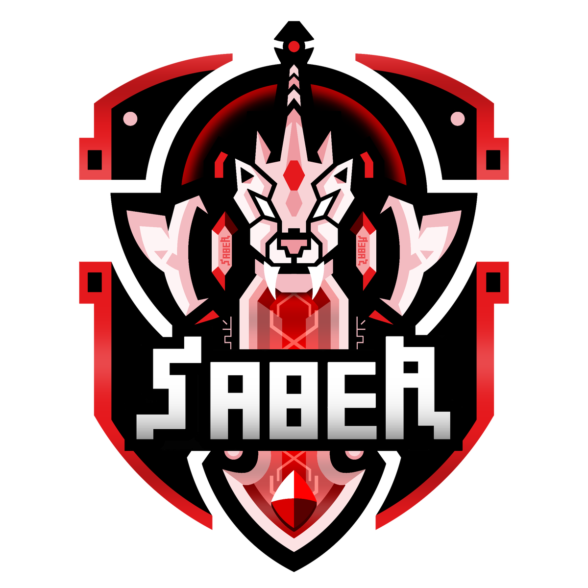
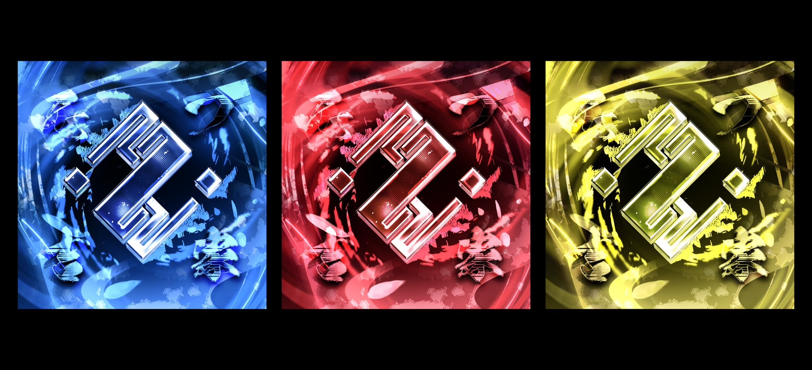
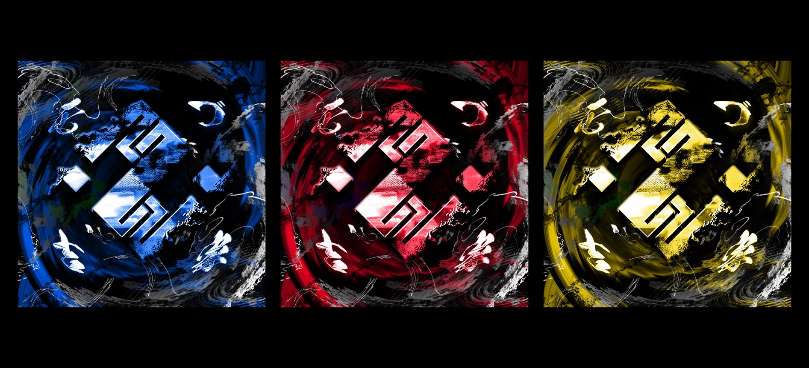
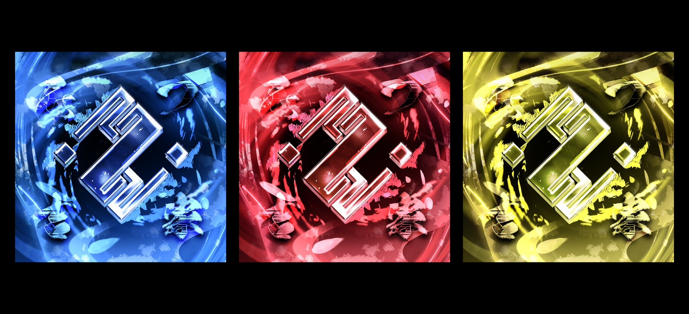
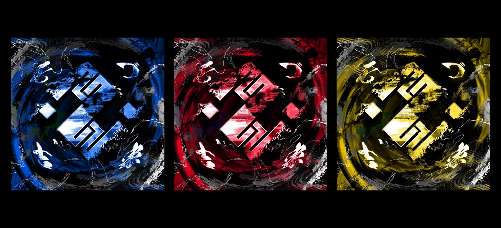

Saber
「剣歯虎 × 剣 × 盾」design concept
剣歯虎 × 剣 × 盾
今回のロゴは、「矛と盾を持ち合わせたチーム」というコンセプトを象徴的に表現することを目指しています。このコンセプトは、攻撃的な力強さと同時に防御的な堅牢さを組み合わせたチームのアイデンティティを示しています。ロゴのデザインにおいては、矛と盾のモチーフを組み込むことで、チームの戦略性とバランス感覚を視覚的に表現します。矛は攻撃の象徴であり、チームの勇敢さや進取の気性を表現します。一方、盾は守りの象徴であり、チームの堅実さや防御力を象徴します。これらの要素を組み合わせたロゴデザインは、チームの統一感や強さを強調し、観客やファンに強力な印象を与えます。デザインの色彩や形状、フォントの選択は、チームのスタイルやブランディングに合わせて慎重に検討されます。
thought
コンセプトを形に
コンセプトを形にした考え方をご紹介。
Avi design
Saber 画像制作
1枚1枚こだわった画像制作を行っております。
 


